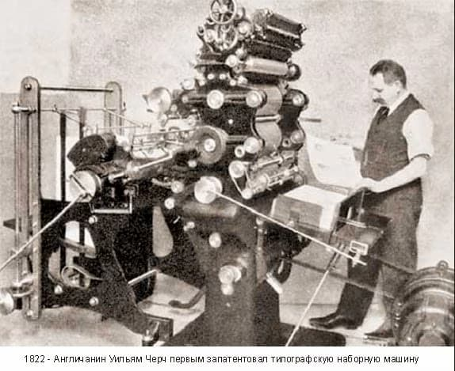
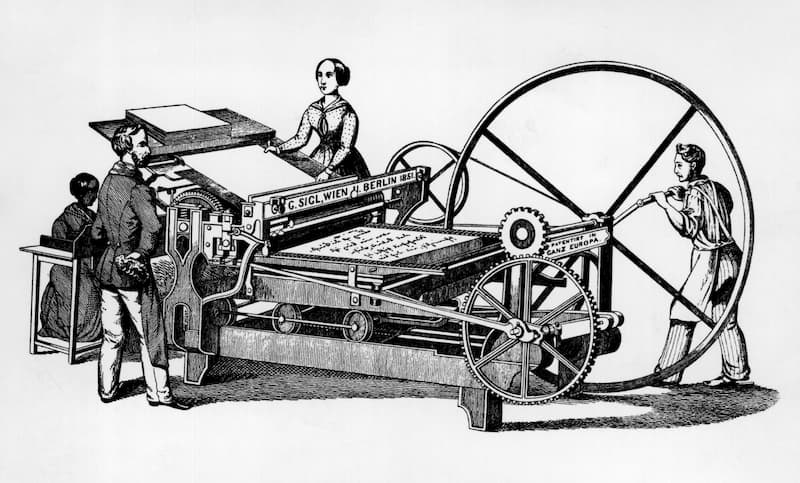

Согласно общепринятому мнению экспертов, официальной датой рождения офсетной печати считается 1904 год. В это время двое изобретателей — американец Айра Вашингтон Рабл и немец Каспар Херманн, работавший в США, — независимо друг от друга создали и запатентовали ключевые технологии данного метода. Однако сама идея печати через промежуточный носитель зародилась раньше. Еще в 1869-1870 годах французы Пель и Юген предложили переносить изображение с печатной формы на жестяную поверхность с помощью эластичного резинового полотна, что стало важным предвестником будущего офсета.

Интересно, что на рубеже XX века к концепции косвенной печати параллельно пришли несколько человек. Помимо Херманна и Рабла, свои разработки предлагали американец Л. Моррис и Роберт Ф. Роджерс. Каспар Херманн оформил патент на сложную шестикрасочную машину, где каждая краска наносилась через отдельную форму и промежуточный цилиндр, что позволяло получать качественные многокрасочные оттиски. Айра Рабл, чье имя также прочно связано с историей офсета, не только построил работающий прототип на заводе Potter, но и ввел в обиход сам термин «офсет» (от англ. offset — перенос, смещение).
Судьбы этих изобретений тесно переплелись: в 1905 году Херманн передал права на свои патенты компании Harris, которая позже, в 1926 году, приобрела и завод Potter. Это слияние технологий и производственных мощностей дало мощный импульс для коммерческого успеха и широкого распространения офсетной печати по всему миру. Таким образом, офсет стал плодом коллективных усилий и конкурентной гонки изобретателей, чьи идеи, объединившись, совершили революцию в полиграфии, сделав массовую печать высококачественной, скоростной и экономически эффективной.